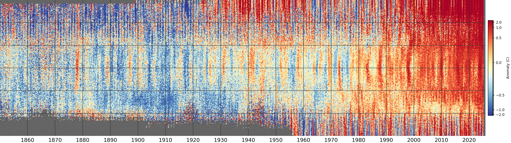

A few more comparisons¶
Let’s look again at HadCRUT5, using a slightly tweaked plotting process:

Monthly temperature anomalies (w.r.t. 1961-90) from the HadCRUT5 dataset after regridding to a 0.25 degree latitude resolution. The vertical axis is latitude (south pole at the bottom, north pole at the top), and each pixel is from a randomly selected longitude and ensemble member. Grey areas show regions where HadCRUT5 has no data. (Figure source).¶
Apart from the recent global warming, there are a lot of oddities apparent in this plot - notably:
* A marked high-latitude northern hemisphere warm period in the mid-twentieth century
* A remarkable cold excursion in about 1905-1915
* A super-el-Nino in 1878
Are these events real, or are they data artifacts? One way to look more closely is to break down HadCRUT into its component land and sea datasets - CRUTEM and HadSST:

Same as above, for each of CRUTEM4 (top), HadSST3 (middle) and HadCRUT5 (bottom) (Figure source).¶

Same as above, for each of CRUTEM4 (top), HadSST3 (middle) and their difference (bottom) (Figure source).¶

{kind=link}